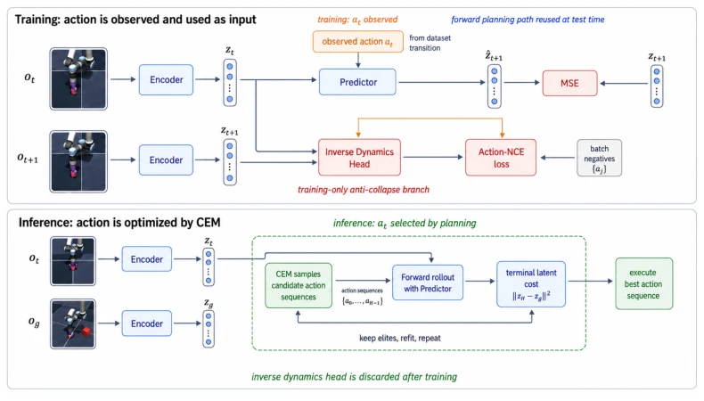
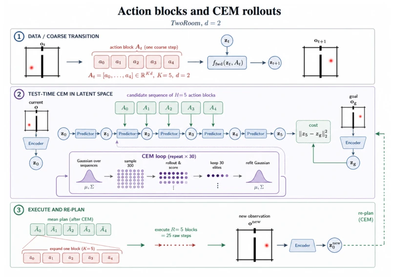
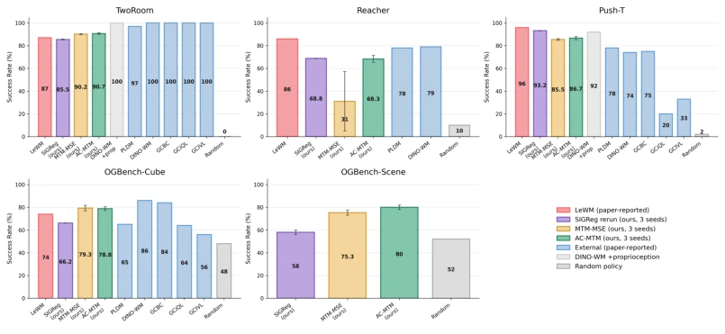
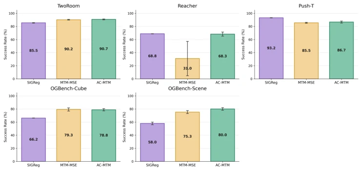

This paper performs a "de-Gaussianization" surgery on JEPA world models. LeWM relies on SIGReg to forcibly squeeze latent variables into an isotropic Gaussian distribution; the authors find this too dogmatic and prefer letting the data speak for itself. AC-MTM adds an inverse dynamics head for training, implements contrastive learning, and discards it directly during testing. The results are quite interesting: simple tasks are a draw, complex multi-object scenes (Scene) dominate, but contact-based tasks (PushT) actually lose slightly. This strategy of "involution during training, lying flat during testing" saves both VRAM and inference time, just don't expect it to solve all physical laws. It proves that anti-collapse signals can come from the dynamics themselves, rather than preset geometric constraints, but PushT's performance reminds us that inverse dynamics signals may fail when state changes are weak. Overall, this is a clean and crisp engineering improvement; although it doesn't overturn theory, it indeed removes the burden of SIGReg in practical planning tasks, and the code is open-source for easy reproduction.
The core pain point of JEPA world models is "collapse": the encoder maps all observations into the same latent variable; although the prediction loss is zero, it is useless. Existing solutions like LeWM (Maes et al., 2026) use SIGReg (Balestriero & LeCun, 2025) to force latent variable distributions to match Gaussian, but this is a global prior that may become a bottleneck in complex environments. The authors question: why must anti-collapse pressure come from external distributions, can't it come from the transition data itself? SMWM (Ivashkov et al., 2026) attempted inverse regression, but the authors believe the contrastive form is more reliable. This study aims to find a distribution-agnostic anti-collapse mechanism that requires no target network or reconstruction objective, while maintaining LeWM's end-to-end simplicity. If preset geometry is limited in low-dimensional or high-degree-of-freedom tasks, data-driven signals might be more robust, especially when multiple controllable factors coexist, SIGReg might waste latent variable budget.
The overall process inherits the LeWM architecture: encoder enc maps pixels to latent variable z, forward predictor fwd predicts z_{t+1} based on z_t and action a_t. The innovation lies in adding an inverse dynamics head inv during the training phase. This head receives adjacent latent variable pairs (z_t, z_{t+1}) and outputs action query vectors. The loss function includes forward MSE and Action-NCE contrastive loss. Action-NCE treats all observed actions within the current batch as a negative sample pool, calculates the distance between query vectors and true actions, uses InfoNCE form to maximize the score of the correct action, temperature parameter tau is set to 0.10. This design ensures a constant encoder cannot outperform random guessing on the inverse task, thereby forcing the encoder to retain information distinguishing actions. The forward predictor is used for CEM planning during testing, the inverse head exists only during training and is completely discarded during inference, ensuring deployment efficiency. Masked refers to predicting missing parts within transition tuples, rather than image block masking. Total loss weight lambda is set to 0.30, fixed after scanning on Reacher.

Figure 1: Training and inference paths for AC-MTM. During training, the observed action is an input to the forward predictor and the positive label for the contrastive inverse task. At test time, CEM samples candidate actions and uses only the unchanged encoder and forward predictor; the inverse dynamics/Action-NCE branch is discarded.

Figure 4: Action blocks and CEM rollouts (TwoRoom, d=2). Each coarse transition bundles K=5 raw simulator actions into one model input block. CEM samples H=5-block candidate sequences, rolls them through the unchanged latent forward model, scores final latent-goal distance, refits to elites, and executes the final mean blocks as ordered low-level env.step actions before re- planning.
Evaluated on five pixel control tasks, including TwoRoom, Reacher, PushT, OGBench-Cube, and OGBench-Scene. Baselines include SIGReg (LeWM), MTM-MSE, and AC-CPC. The metric is planning success rate. AC-MTM is on par with SIGReg on standard tasks, but significantly outperforms SIGReg on the high-difficulty OGBench-Scene task (80.0% vs 58.0%). Ablation shows contrastive inverse dynamics is more stable than non-contrastive inverse regression (MTM-MSE) on Reacher, avoiding bimodal collapse. But on PushT, AC-MTM is slightly lower than SIGReg; probe analysis indicates inverse dynamics signals encode weak control variables (such as block orientation) insufficiently. Random strategy baseline is about 52%, proving task difficulty. Experiments use three training seeds {3072, 1, 2}, CEM samples 300 sequences, evaluated 200 times.

Figure 3: Planning success across the five environments. Salmon and blue bars are paper-reported LeWM/external baselines from Maes et al. (2026); purple, gold, and green bars are our controlled SIGReg, MTM-MSE, and AC-MTM evaluations across three training seeds. No external baseline has published OGBench-Scene results under this protocol, so the Scene panel contains only our controlled models and the random policy. The external baselines place AC-MTM in the original evaluation frame; direct statistical claims are made only for the controlled comparisons in Table 3.

Figure 5: Controlled three-way ablation with 200 evaluation episodes. Error bars show standard deviation over three training seeds. The Reacher panel shows why Action-NCE is used as the main method: it removes the bimodal collapse of the non-contrastive inverse-regression ablation without changing the test-time planner.